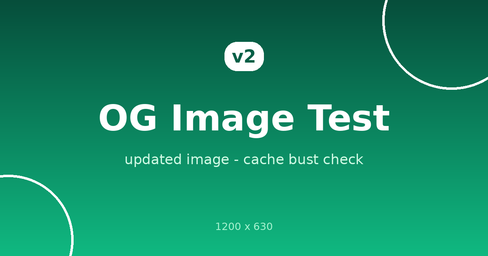

share/1 곰돌이 🐻
share/1 곰돌이 🐻 share/2 냥냥이 🐱
share/2 냥냥이 🐱 share/3 토깽이 🐰
share/3 토깽이 🐰 share/4 개굴이 🐸
share/4 개굴이 🐸 share/5 유령이 👻
share/5 유령이 👻이 페이지 URL을 SNS나 메신저에 붙여넣으면 아래 이미지가 큰 카드(summary_large_image)로 떠야 합니다.

/ — 큰 이미지 카드 (이 페이지)/summary.html — 작은 정사각형 카드 (summary)아래 버튼을 누르면 share/1~share/5 중 하나가 랜덤으로 뽑혀서 트위터 공유창이 열려요. 각 경로는 카드 메타 전용이고, 사람이 열면 이 메인으로 리다이렉트됩니다.
share/1 곰돌이 🐻share/2 냥냥이 🐱share/3 토깽이 🐰share/4 개굴이 🐸share/5 유령이 👻💡 카드가 예전 것으로 나오면 캐시 때문일 수 있어요. 디버거에서 "다시 스크랩" 하거나 URL 뒤에 ?v=2 같은 쿼리를 붙여보세요.